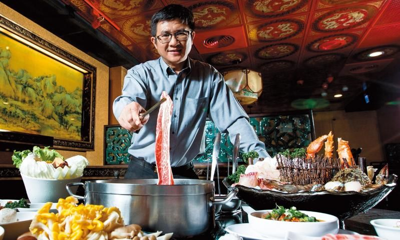

 老四川老闆 原本在哈爾濱當婚紗攝影師的梁朝辰， 2003年向中國友人學習麻辣鍋配方後， 以麻重於辣的正宗川味在高雄創立「老四川巴蜀麻辣燙」， 從13張桌子的小店，到現在全台11家直營門市， 2016年年營業額7.8億元，是台灣首家興櫃掛牌的麻辣鍋店。
2003年向中國友人學習麻辣鍋配方後，
以麻重於辣的正宗川味在高雄創立「老四川巴蜀麻辣燙」，
從13張桌子的小店，到現在全台11家直營門市，
2016年年營業額7.8億元，是台灣首家興櫃掛牌的麻辣鍋店。